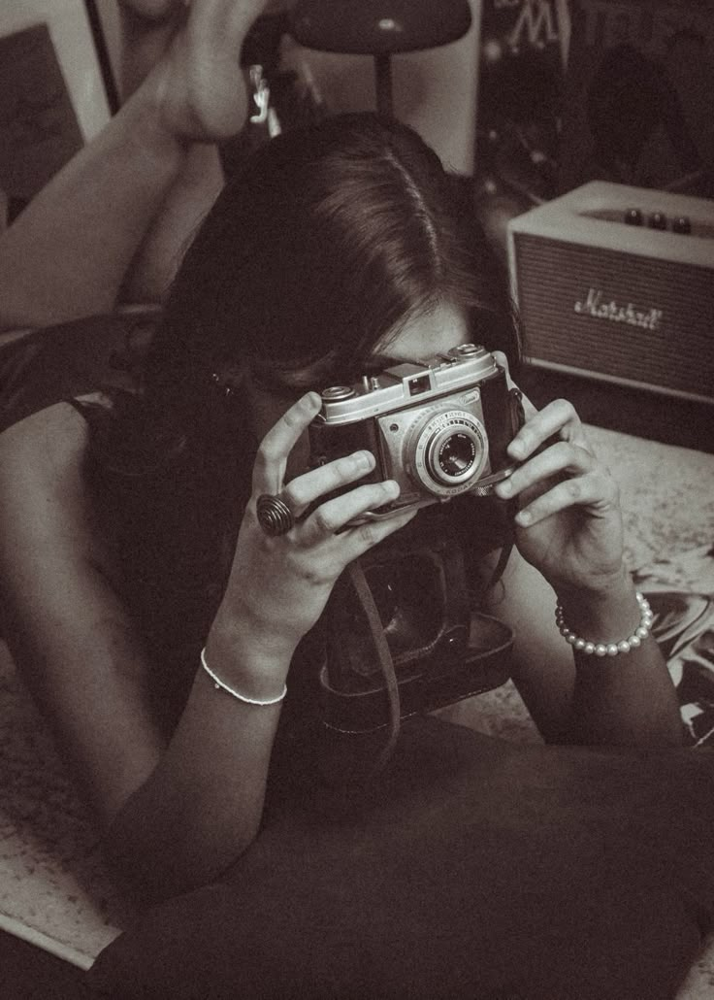

A fotografia é tão importante para a sociedade que fica quase impossível imaginarmos uma família ou um conglomerado de pessoas que não tenham sido fotografadas. Assim que a fotografia foi inventada principiou a mudar a história do mundo, proporcionando a todos um instrumento importante na busca da própria identidade. É através da fotografia que captamos um momento, um “flagra” do que acontece, momento este único, que jamais se repetirá. A foto nada mais é do que a testemunha ocular do fato é a existência contida na imagem comprovando o que realmente ocorreu naquele instante. Ela nos ajuda a expressar (seja algo bom ou nem tanto assim) em várias maneiras nossas vidas, muitas mensagens e pensamentos. Somos seres criativos naturalmente e precisamos exteriorizar, por mais que alguém já tenha se expressado sobre aquele assunto sempre podemos encontrar outras maneiras ou a nossa própria de deixar essa mensagem com nossa visão.
| Regra/Técnica | Descrição | Exemplo de uso |
|---|---|---|
| Regras dos terços | Divide a imagem em 9 partes iguais para posicionar os elementos principais nos pontos de intersecão. | Colocar o horizonte na linha superior ou inferior. |
| Linhas guia | Linhas naturais da imagem que conduzem o olhar do observador. | Estradas, trilhos ou rios levando até o assunto. |
| Simetria | Equilíbrio visual entre os lados da imagem. | Reflexos na água ou arquitetura. |
| Enquadramento | Usar elementos da cena para "moldurar" o assunto. | Portas, janelas ou árvores ao redor do objeto. |
| Profundidade | Cria sensação de distância usando planos (frente,meio e fundo). | Uma pessoa na frente e paisagem ao fundo. |
| Espaço negativo | Área vazia que destaca o assunto principal. | Uma pessoa pequena em um fundo grande e vazio. |
| Ponto de vista | Âmgulo ou posição da câmera. | Foto de cima (plongée) ou de baixo (contra-plongée). |